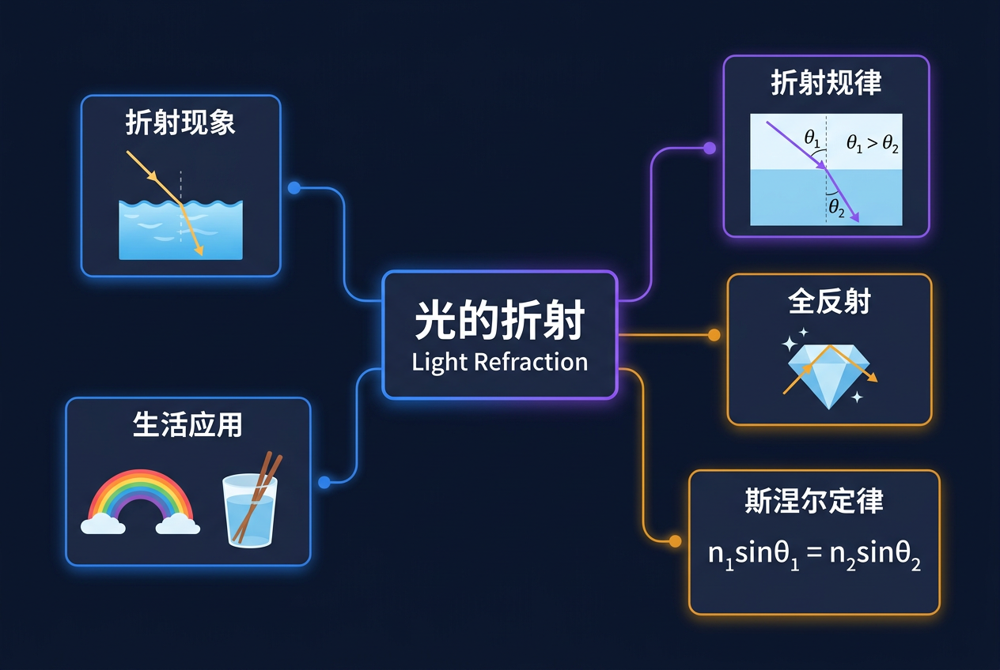
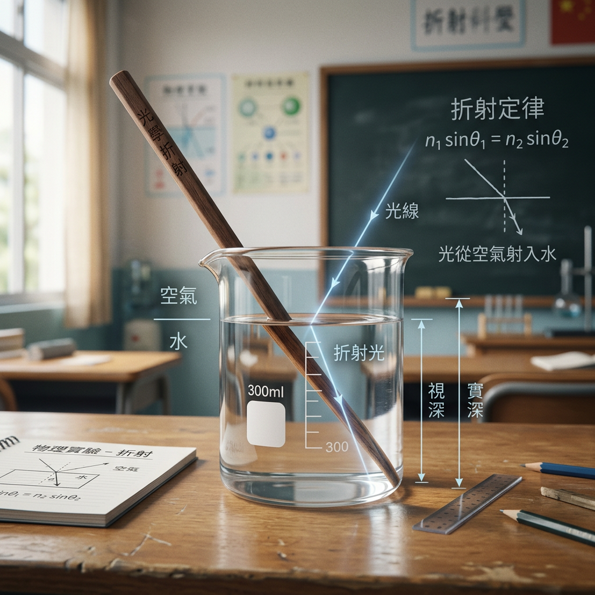
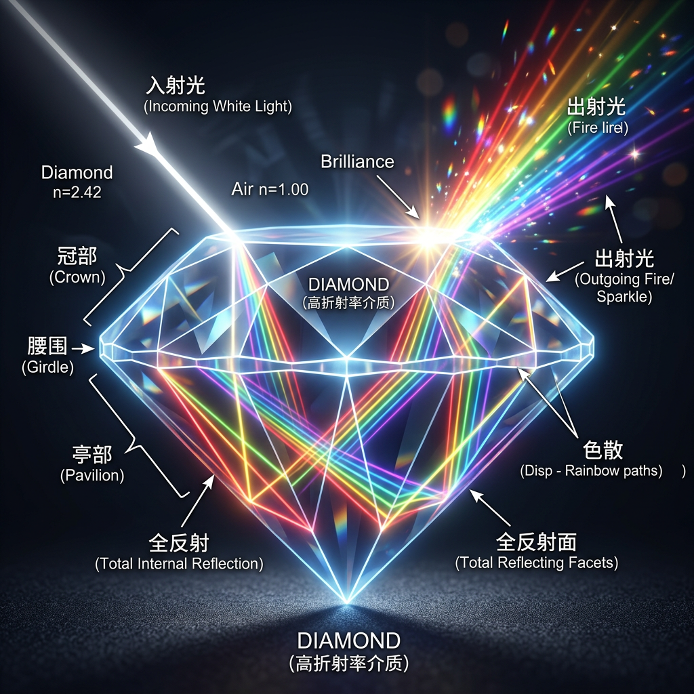

从"水中筷子变弯"到"海市蜃楼"——揭开光在不同介质间的旅行秘密

知道光从一种介质斜射入另一种介质时会发生偏折
理解入射角与折射角的关系，能定性判断光路偏折方向
用折射知识解释水中物体"变浅"、彩虹、海市蜃楼等现象
想想手电筒照出的光束是什么形状？
入射角为30°时，反射角等于多少？
把一根筷子插入水中，从侧面看，筷子看起来怎么了？
你站在游泳池边往下看，池底看起来比实际浅很多。你觉得水只到腰，跳下去才发现没过胸口。
【And】 你以为自己的眼睛出了问题。
【But】 这不是你的错——是光在水面处拐了弯，让你的大脑"算错"了距离。
【Therefore】 这就是光的折射——光从一种透明介质进入另一种时，传播方向发生了改变。
当光从一种透明介质（如空气）斜射入另一种透明介质（如水、玻璃）时，传播方向会在界面处发生偏折。
| 术语 | 含义 |
|---|---|
| 入射光线 | 射向界面的光线（金色） |
| 折射光线 | 进入另一种介质后偏折的光线（蓝色） |
| 法线 | 在入射点处垂直于界面的虚线 |
| 入射角 θ₁ | 入射光线与法线的夹角（不是与界面的夹角！） |
| 折射角 θ₂ | 折射光线与法线的夹角 |

入射角和折射角都是跟"法线"量的，不是跟界面量的！
很多同学会下意识地量光线和水面之间的夹角——那是错的。法线垂直于界面，角度都从法线开始数。
"空气中的角永远最大"——不管光是从空气射入水，还是从水射出空气，空气这一侧的角（入射角或折射角）总比另一侧大。因为空气是"光速更快"的介质，光在快的介质中角度更大。
↑ 拖动滑块改变入射角和介质，观察折射光线的变化
折射率 n 表示光在真空中的速度与在该介质中速度的比值。n 越大，光速越慢，偏折越明显。
| 介质 | 折射率 n | 光速（约） | 特点 |
|---|---|---|---|
| 真空 / 空气 | 1.00 | 3.0×10⁸ m/s | 基准 |
| 水 | 1.33 | 2.25×10⁸ m/s | 池底看起来浅 |
| 普通玻璃 | 1.50 | 2.0×10⁸ m/s | 眼镜、窗户 |
| 钻石 | 2.42 | 1.24×10⁸ m/s | 闪耀的火彩 |
一束光从空气斜射入玻璃，入射角为 45°。以下哪个判断是正确的？
这是一个专业级的物理模拟器，你可以：
模拟器来自 PhET Interactive Simulations，科罗拉多大学博尔德分校，CC-BY 4.0 许可
实验1：选择"介绍"标签页。上方选空气，下方选水。移动激光笔改变入射角，观察：折射角是否始终小于入射角？
实验2：把下方换成"玻璃"。同样的入射角，折射角比水中更大还是更小？
实验3：选择"棱镜"标签页。用白光照射三棱镜，观察彩虹分光现象——这就是色散！
当光从水（或玻璃）射向空气时，折射角大于入射角。如果不断增大入射角：
这就是全反射——光"被关在"了介质内部。

💎 钻石为什么闪？
钻石的折射率极高（n=2.42），临界角只有约 24°。大量光线在钻石内部发生全反射，被"困"在里面反复弹跳后从特定角度射出，形成璀璨的火彩。
📡 光纤通信
光纤就是利用全反射原理：激光在玻璃纤维内部不断全反射，光信号可以沿着弯曲的光纤传播几千公里而几乎不损失！你家的宽带就靠它。
光从空气射入水中，能发生全反射吗？
筷子水下部分发出的光，从水中射入空气时发生折射，折射角大于入射角。你的眼睛沿着折射后的光线反向延长，看到的"虚像"位置比实际位置更浅。所以筷子看起来在水面处"断"了。
池底发出的光折射后偏离法线（从水→空气），你看到的池底虚像位置比实际高。一个 2 米深的泳池看起来可能只有 1.5 米——所以千万不要用目测判断水深！
阳光（白光）进入小水滴后，不同颜色的光折射率不同：紫光折射最多，红光折射最少。白光被分成了七种颜色——这就是色散。彩虹就是无数小水滴"分光"后的集体效果。
沙漠或公路上空气受热不均匀，近地面温度最高、密度最小（折射率最小）。远处的光线在经过这些密度不同的空气层时不断折射、弯曲，最终形成倒影——你看到地面上好像有一摊"水"。
水中的鱼看起来比实际位置偏浅（偏高）。
| 知识点 | 核心结论 | 易错点提醒 |
|---|---|---|
| 折射定义 | 光从一种介质斜射入另一种介质时方向改变 | "斜射"是关键，垂直入射不偏折 |
| 角度关系 | 空气中的角永远最大 | 角度从法线量，不是从界面量！ |
| 折射方向 | 空气→水/玻璃：向法线偏折（θ₂ < θ₁） | 反过来则远离法线偏折 |
| 全反射 | 光密→光疏 + 入射角 > 临界角 → 100% 反射 | 只能从密到疏，不能反过来 |
| 生活应用 | 筷子弯折、池底变浅、彩虹、海市蜃楼 | 都是折射，但彩虹还涉及色散 |
1. 斯涅尔定律（Snell's Law）：折射的精确数学公式为 n₁sinθ₁ = n₂sinθ₂。初中阶段只需要定性判断大小关系，高中会学精确计算。
2. 凸透镜成像：折射是透镜工作的基础。凸透镜让平行光汇聚，凹透镜让平行光发散——它们都是靠玻璃对光的折射实现的。这是下一课的内容！
3. 光纤原理：互联网传输信息的光纤就是利用全反射。光信号在纤芯（高折射率玻璃）和包层（低折射率玻璃）的界面上不断全反射前进，几乎没有损耗。
点击播放，边听边学。支持连续播放，自动切换到下一段讲解。